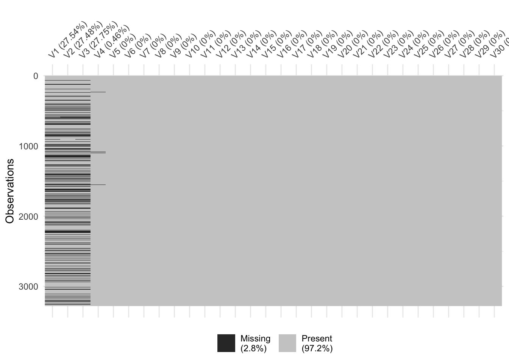

Chapitre 8 Comparaison d’algorithmes
Les chapitres précédents ont présenté plusieurs algorithmes permettant de répondre à un problème posé, le plus souvent de classification supervisée. Se pose bien entendu la question de choisir un unique algorithme. Etant donné un échantillon \(\mathcal D_n=\{(x_1,y_1),\dots,(x_n,y_y)\}\) on rappelle qu’un algorithme de prévision est une fonction \[g:\mathcal X\times(\mathcal X\times \mathcal Y)^n\to\mathcal Y\] qui, à une nouvelle observation \(x\in\mathcal X\) renverra la prévision \(g(x,\mathcal D_n)\) calculée à partir de l’échantillon \(\mathcal D_n\). Cette fonction \(g\) peut contenir tout un tas d’étapes comme :
- la gestion des données manquantes
- une procédure de choix de variables
- une méthode pour ré-équilibrer les données
- des procédures pour calibrer des paramètres (qui peuvent éventuellement inclure des validations croisées)
- …
Le machine learning se focalisant sur la capacité d’un algorithme à bien prédire, les stratégies classiques pour choisir un algorithme vont (une fois de plus) consister à évaluer le pouvoir prédictif de chaque algorithme. Il n’y a rien de bien nouveau puisque cela va reposer sur les techniques présentées aux chapitres 1 :
- choisir un ou plusieurs critères (erreur de classification, AUC, \(F_1\)-score…)
- choisir une procédure de ré-échantillonnage pour estimer ce critère (validation hold-out, validation croisée, OOB…).
Nous proposons de développer une stratégie pour choisir un algorithme sur le jeu de données Internet Advertisements Data Set disponible sur cette page https://archive.ics.uci.edu/ml/datasets/internet+advertisements. Le problème est d’identifier la présence d’une image publicitaire sur des pages webs. Il comporte
ad.data <- read.table("data/ad_data.txt",header=FALSE,sep=",",dec=".",na.strings = "?",strip.white = TRUE)
dim(ad.data)
[1] 3279 1559Ce jeu de données contient 1558 variables explicatives, ces variables contiennent différentes caractériques de la page web (voir le site où sont présentées les données pour plus d’information). La dernière variable est la variable à expliquer, elle vaut ad. si présence d’une publicité, nonad. sinon.
names(ad.data)[ncol(ad.data)] <- "Y"
ad.data$Y <- as.factor(ad.data$Y)
summary(ad.data$Y)
ad. nonad.
459 2820 Ce jeu de données contient des données manquantes.
sum(is.na(ad.data))
[1] 2729On peut les visualiser avec
library(visdat)
vis_miss(ad.data[,1:30])
On remarque que :
- 920 lignes
- 4 colonnes (les 4 premières)
ont au moins une valeur manquante.
apply(is.na(ad.data),1,any) %>% sum()
[1] 920
var.na <- apply(is.na(ad.data),2,any)
names(ad.data)[var.na]
[1] "V1" "V2" "V3" "V4"On choisit de retirer ces 4 variables de l’analyse (il faudrait peut-être réfléchir un peu plus…).
ad.data1 <- ad.data[,var.na==FALSE]
dim(ad.data1)
[1] 3279 1555
sum(is.na(ad.data1))
[1] 0On se retrouve donc en présence de 3279 individus et 1554 variables explicatives. On construit la matrice des X et le vecteur des Y qui sont nécessaires pour certaines fonctions comme glmnet :
X.ad <- model.matrix(Y~.,data=ad.data1)[,-1]
Y.ad <- ad.data1$Yet on transforme la variable cible en 0-1 pour utiliser gbm:
ad.data2 <- ad.data1 %>% mutate(Y=recode(Y,"ad."=0,"nonad."=1))On souhaite comparer les algorithmes présentés précédemment. Ils nécessitent les packages suivants
library(e1071)
library(caret)
library(rpart)
library(glmnet)
library(ranger)
library(gbm)On commence tout d’abord par représenter un algorithme par une fonction R qui admettra en entrée un jeu de données et renverra une unique prévision pour de nouveaux individus. On illustre ces fonctions pour prédire ce nouvel individu.
newX <- ad.data1[1000,]
newX.X <- matrix(X.ad[1000,],nrow=1)On stockera les prévisions dans l’objet suivant
prev <- tibble(algo=c("SVM","arbre","ridge","lasso","foret","ada","logit"),prev=0)SVM à noyau gaussien où le choix des paramètres du noyau se fait par validation croisée 4 blocs :
prev.svm <- function(df,newX){ C <- c(0.01,1,10) sigma <- c(0.1,1,3) gr <- expand.grid(C=C,sigma=sigma) ctrl <- trainControl(method="cv",number=4) cl <- makePSOCKcluster(3) registerDoParallel(cl) res.svm <- train(Y~.,data=df,method="svmRadial",trControl=ctrl, tuneGrid=gr,prob.model=TRUE) stopCluster(cl) predict(res.svm,newX,type="prob")[2] } prev[1,2] <- prev.svm(ad.data1,newX)Arbre de classification où l’élagage est fait selon la procédure CART présentée dans le chapitre 3.
prev.arbre <- function(df,newX){ arbre <- rpart(Y~.,data=df,cp=1e-8,minsplit=2) cp_opt <- arbre$cptable %>% as.data.frame() %>% filter(xerror==min(xerror)) %>% dplyr::select(CP) %>% slice(1) %>% as.numeric() arbre.opt <- prune(arbre,cp=cp_opt) predict(arbre,newdata=newX,type="prob")[,2] } prev[2,2] <- prev.arbre(ad.data1,newX)Lasso et Ridge où le paramètre de régularisation est choisi par validation croisée 10 blocs en minimisant la déviance binomiale :
prev.ridge <- function(df.X,df.Y,newX){ ridge <- cv.glmnet(df.X,df.Y,family="binomial",alpha=0) as.vector(predict(ridge,newx = newX,type="response")) } prev.lasso <- function(df.X,df.Y,newX){ lasso <- cv.glmnet(df.X,df.Y,family="binomial",alpha=1) as.vector(predict(lasso,newx = newX,type="response")) } prev[3,2] <- prev.ridge(X.ad,Y.ad,newX.X) prev[4,2] <- prev.lasso(X.ad,Y.ad,newX.X)Forêt aléatoire avec les paramètres par défaut :
prev.foret <- function(df,newX){ foret <- ranger(Y~.,data=df,probability=TRUE) predict(foret,data=newX,type="response")$predictions[,2] } prev[5,2] <- prev.foret(ad.data1,newX)Adaboost et logitboost avec le nombre d’itérations choisi par validation croisée 5 blocs :
prev.ada <- function(df,newX){ ada <- gbm(Y~.,data=df,distribution="adaboost",interaction.depth=2, bag.fraction=1,cv.folds = 5,n.trees=500) nb.it <- gbm.perf(ada,plot.it=FALSE) predict(ada,newdata=newX,n.trees=nb.it,type="response") } prev.logit <- function(df,newX){ logit <- gbm(Y~.,data=df,distribution="bernoulli",interaction.depth=2, bag.fraction=1,cv.folds = 5,n.trees=500) nb.it <- gbm.perf(logit,plot.it=FALSE) predict(logit,newdata=newX,n.trees=nb.it,type="response") } prev[6,2] <- prev.ada(ad.data2,newX) prev[7,2] <- prev.logit(ad.data2,newX)
On peut visualiser la prévision de chaque algorithme
prev
# A tibble: 7 x 2
algo prev
<chr> <dbl>
1 SVM 0.950
2 arbre 0.990
3 ridge 0.984
4 lasso 0.980
5 foret 0.979
6 ada 0.974
7 logit 0.983Choisir un algorithme parmi les précédents en utilisant comme critère l’erreur de classification ainsi que la courbe ROC et l’AUC. On pourra faire une validation croisée 10 blocs (même si ça peut être un peu long…).
On considère le même jeu de données que précédemment. Choisir un algorithme de ré-équilibrage par validation croisée. Il s’agira de combiner des méthodes de ré-équilibrage (random over/under sampling, smote, tomek…) avec des algorithmes de prévision de machine learning. On pourra se restreindre au modèle logistique avec calcul des estimateurs par maximum de vraisemblance, ridge, lasso…